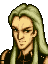
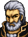
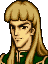
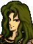
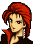
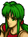

ワールドマップ
シレジアの内乱をしずめたシグルドを
グランベルの大軍が待ち受けていた。Grannvale's great army lay waiting for Sigurd, who had quelled the civil war in Silesse.
ザクソン城を制圧したのち
シグルド達は休む間もなく、After subduing Saxony Castle, Sigurd and his group, without even a moment's rest,
リューベック城のグランベル軍と
向き合うことになった。found themselves facing the Grannvale army at Lubeck Castle.
軍を率いるのは、父のかたきの一人
ランゴバルト卿である。Leading that army was Lord Langobalt, one of the men who killed his father.
父バイロン卿をおとしいれた
ランゴバルトとの戦いは、The battle against Langobalt, who had framed his father Lord Byron,
シグルドにとって父への弔いでもあった。was also, for Sigurd, a memorial service for his father.
砂漠の街フィノーラには、
アルヴィス卿の有能なる部下In the desert town of Finora, Lord Arvis's capable retainer,
魔道剣士ヴァハが駐留し、
ヴェルトマーには、the sword-mage Vaha, was stationed; and at Vertomer,
アルヴィスの右腕とまでいわれた
アイーダ将軍が城を守っていた。General Ide, said to be Arvis's right hand, guarded the castle.
そして、王都バーハラでは、And meanwhile, in the capital, Belhalla,
老いて病床にあったアズムール王を
アルヴィス卿がたすけ、Lord Arvis supported the aged, bedridden King Azmur,
宰相のレプトール卿が
国の治安にあたっている。while Chancellor Reptor handled the nation's public order.
王都バーハラへの道のりは遠く、
討伐隊との戦いはさけられない。The road to the capital, Belhalla, was long, and a clash with the pursuing army was unavoidable.
これ以上、世話になったシレジアを
戦いに巻き込むわけにはいかない。They could no longer bear to drag Silesse, who had cared for them, further into this war.
シグルドたちは最後の戦いを決意した。
グラン暦 ７６０年 早春、Sigurd and his group resolved on this final battle. In the early spring of the year 760 of the Grannvale calendar,
シレジアの山野は
いまだ深い雪におおわれていた。the mountains and fields of Silesse were still covered in deep snow.
Opening
(バイロンがリューベック城付近からザクソン城に向かってのろのろと歩く)

ううっ、シグルドよ
・・・私はまだ死ねぬ・・・Ugh... Sigurd... I cannot die yet...
おまえにこの聖剣ティルフィングを
わたすまでは・・・Not until I pass this holy sword, Tyrfing, to you...
(スレイダーがリューベック城に向かう)
オープニング（リューベック）

ランゴバルト様、Lord Langobalt,
逃亡中のバイロン卿を発見しましたが
あと一息のところで
逃げられてしまいましたwe found Lord Byron, who was on the run, but he slipped away from us just as we were closing in.
どうやら、シレジアに
逃げ込むつもりのようですIt seems he intends to flee into Silesse.

なんだと、ばかめ！
すぐにおいかけんか！！What, you fool! Chase him at once!!
シアルフィの聖騎士団、
グリューンリッターは
我らのだまし討ちで壊滅させたがWe annihilated the holy knights of Sylvail, the Grutia Knights, with our surprise attack,
バイロンが生きていたのでは
なんにもならんではないか！but if Byron's still alive, it's all for nothing!
はっ、しかし
相当の手傷を負っていますので
そう長くはもたないかと・・・Yes sir, but he's suffered considerable wounds, so he shouldn't last much longer...
だから貴様は甘いと言うのだThat's exactly why I say you're too soft.
バイロンは最後の力をふりしぼって
聖剣ティルフィングを
息子にわたそうとしているByron is mustering his last strength to try to pass the holy sword Tyrfing to his son.
あの剣がシグルドの手にわたれば
後々まで面倒なことになるのが
わからないのか！If that sword falls into Sigurd's hands, it'll cause no end of trouble later—don't you see that!
すぐに出撃しろ、バイロンを殺すのだ！！Sortie at once and kill Byron!!
はっ、かしこまりましたYes sir, understood.
(リューベック城から、スレイダー率いるリューベック軍が登場)
くそ、ダナンのやつめ
まだ援軍に来られぬのかDamn it, that Dagan still hasn't come with reinforcements.
精鋭の斧騎士団、
グラオリッターを率いていながら
イザークの反乱一つおさえられぬとは・・・Leading the elite axe-knight corps, the Grau Ritter, yet unable to suppress even a single rebellion in Isaach...
レックスといいダナンといい、
役に立たぬ息子どもめBoth Lex and Dagan, useless sons, the lot of them.

ランゴバルト卿、ご心配めさるな
わがバイゲリッターがあるかぎり
反逆者など恐れるものではないLord Langobalt, there's no need to worry. As long as I have my Vaegrite, there's nothing to fear from traitors.
すまぬな、アンドレイ卿
いざというときは力をかしてくれI'm grateful, Lord Andrei. When the time comes, lend me your strength.
ふふっ、まかせておけ・・・Heh heh, leave it to me...
(リューベック城から、アンドレイ率いるリューベック軍が登場)
くそっ、なまいきな小僧め
父親を殺しておきながら
まったく悪びれたようすもないDamn it, that insolent brat. He killed his own father and shows not the slightest guilt.
リング卿もあわれなものよ・・・Lord Reign is a pitiful man too...
(リューベック城から、ランゴバルト率いるリューベック軍が登場)
オープニング（ザクソン）

シグルド様、東の方から騎士が一騎で
こちらへ向かってくるようですLord Sigurd, it seems a lone knight is heading this way from the east.

なに？ 敵か！？What? An enemy!?
いえ、リューベックの城から
追撃軍が出たようですから
たぶん味方だと思いますNo, it looks like a pursuit force came out from Lubeck Castle, so I think it's probably an ally.
そうか、ならば助けなければならないな
・・・・・・いずれにしても
ランゴバルト軍との戦いはさけられないI see, then we must help him... in any case, a battle with Langobalt's army can't be avoided.
よし、敵の前線を一気に撃破する
最初の一戦ですべては決まるぞ！Right, our first battle, where we crush the enemy's front line in one stroke, will decide everything!
会話（エーディン→ブリギッド）

お姉様、どうかされたのですか？Big Sister, is something wrong?

エーディン、アンドレイのことは
あなたもきいたでしょうEdain, you've heard about Andrei too, haven't you.
はい、父上を手にかけたうえ、
シレジアのマーニャ様まで・・・Yes, that he laid hands on Father, and even Lady Mahnya of Silesse...
アンドレイは
悪魔にみいられたのでしょうかHas Andrei been possessed by a demon, I wonder?
私はアンドレイを殺します
彼にこれ以上罪をおかさせないためにも
しかたのないことですI will kill Andrei. So that he commits no more sins than this, it must be done.
エーディンはわかってくれますねEdain, you understand, don't you?
お姉様・・・Big Sister...
辛いけどがまんしてね
彼の罪は私たちの罪でもあるのIt's painful, but please bear with it. His sin is our sin too.
私の手は血に汚れるけれど
エーディンだけにはわかってほしいMy hands will be stained with blood, but I want at least you, Edain, to understand.
はい・・・ブリギッド姉様・・・Yes... Big Sister Brigid...
会話（クロード→エーディン）
※クロードとエーディンが恋人関係の場合のみ[Only if Claude and Edain are a couple]

エーディン、いよいよ最後の戦いですねEdain, the final battle is finally here.
はい、クロード様・・・Yes, Father Claude...
これをあなたにわたしておきます
若い兵士たちを助けてあげなさいI'll leave this with you. Use it to help the young soldiers.
これは、レスキューの杖ですね
でもどうして・・・This is the Rescue Staff, isn't it. But why...
これは誰にも話していないことですが
妻であるあなただけには話しておきますThis is something I haven't told anyone, but I'll tell you, my wife, at least.
よくききなさい
この戦いは私たちの敗北で終わります
主だったものはすべて死にますListen carefully. This battle will end in our defeat. All the main figures will die.
え・・・！？Wha...!?
ブラギの塔で神の声をきいたときには
私も信じられませんでしたWhen I heard the god's voice at the Tower of Baldr, even I couldn't believe it.
しかし、これが運命なのです
むろん私も死ぬでしょう
だから、あなたにこの杖を託すのですBut this is fate. Of course, I will die too. That's why I'm entrusting this staff to you.
そんな・・・ウソです！！
そんなことは信じられません！！No... that's a lie!! I can't believe something like that!!
どうか・・・
どうかウソだとおっしゃって下さい・・・Please... please tell me it's a lie...
エーディン、悲しむことはありません
私たちの死で
すべてが終わるわけではないEdain, there's no need to be sad. Our deaths don't mean everything ends.
生あるものが死に、
形あるものが失われるのは仕方のない事、
しかし無になるわけではないIt's only natural that living things die and things with form are lost, but it doesn't mean becoming nothing.
より完全なものへと形を変えるのです
死を恐れてはいけない
失うことを恐れてはいけませんThey change form into something more complete. You mustn't fear death. You mustn't fear loss.
でも、クロード様・・・But, Father Claude...
私は死んだとしても、また生まれますEven if I die, I will be born again.
ほら、すでにあなたの中にも
新しい命が・・・
それが私かもしれないのですLook, already, inside you too, there's a new life... that might be me.
だから、エーディンは生きねばなりませんThat's why Edain must go on living.
そんな・・・クロード様はずるい
わたし一人で生きて行けと言うのですか！No... Father Claude, that's unfair. Are you telling me to live on alone!?
エーディン、
私はあなたとめぐりあえて幸せでした
どうか許してくださいね・・・Edain, I was happy to have met you. Please forgive me...
クロード様・・・Father Claude...
(「レスキューの杖 をてにいれた！」)
1ターン目リューベック軍フェーズ終了後（バーハラ）

アルヴィス卿よ、
シグルドの手勢がバーハラに向かって
進撃しているというのは本当なのかLord Arvis, is it true that Sigurd's men are marching toward Belhalla?

はい、しかしご心配にはおよびませんYes, but there's no need to worry.
すでにランゴバルト卿の軍団が
リューベックに展開しており
反乱軍の討伐も、もはや時間の問題かとLord Langobalt's corps has already deployed to Lubeck, and subduing the rebel army is only a matter of time now.
だがのぉ、
わしはいまだに信じられぬのじゃBut, you know, I still can't believe it.
あのバイロン卿がクルトを暗殺した事も
シグルドが反乱を起こした事ものぉ・・・That Lord Byron assassinated Kurth, and that Sigurd raised a rebellion...
陛下、まだそのようなことを・・・
バイロン卿が
ユングヴィのリング卿とはかってMajesty, still saying such things... Lord Byron, in collusion with Lord Ring of Jungby,
クルト殿下を害したことは
レプトール、ランゴバルトの両公爵が
見とどけているのですharmed Prince Kurth—both Dukes Reptor and Langobalt witnessed it.
彼らは王家のさんだつをねらい、
それを殿下に知られたことで
お命まで奪いました・・・They sought to usurp the royal family, and when the prince learned of it, they even took his life...
むろんシグルド公子も
反乱にくみしていますOf course, Lord Sigurd too is complicit in the rebellion.
それが証拠に、彼は、
敵国のイザークの王子をかくまっているAs proof of that, he is harboring the prince of the enemy nation, Isaach.
これは明らかに、
国家に対する反逆ですThis is clearly treason against the state.
クルト殿下は、
今では私にとっても義父・・・Prince Kurth is now, to me, also a father-in-law...
愛する妃・・・ディアドラのためにも
私は、逆賊シグルドを
許すわけにはまいりませんFor the sake of my beloved wife—Deirdre—too, I cannot forgive the rebel Sigurd.
もしランゴバルト卿が
破れるようなことになればShould Lord Langobalt happen to be defeated,
わがヴェルトマー家の炎騎士団、
ロートリッターが
彼ら反乱軍を討伐してごらんに入れますmy House Vertomer's flame-knight corps, the Loh Ritter, will subdue that rebel army for you to see.
そうか・・・そなたがそこまでいうのなら、
やむをえまいのぉ・・・I see... if you say so much, there's nothing for it, I suppose...
アルヴィスよ
ディアドラのことを・・・ごほごほ・・・Arvis, about Deirdre... *cough cough*...

おじいさま！ 大丈夫ですか
ご無理をなさってはいけません
もうお休みになってくださいGrandfather! Are you all right? You mustn't push yourself. Please rest now.
ああ、ディアドラ・・・
おまえは優しい子じゃのおAh, Deirdre... you are such a kind child.
老い先短いわしにとって、
おまえが唯一の希望じゃFor an old man like me with little time left, you are my one and only hope.
クルトがいつ
おまえのような娘を得たのかは知らぬがI don't know when Kurth came to have a daughter like you,
おまえが、わがバーハラ王家の
直系であることは
その額のしるしをみれば明らかじゃbut that you are a direct descendant of the royal house of Belhalla is clear from the mark on your forehead.
いままで、どこでどうして
暮らしておったのか・・・Until now, where and how were you living...
ごめんなさい、おじいさま・・・
わたし、なにも思い出せないのI'm sorry, Grandfather... I can't remember anything.
何一つとして、
わたしには記憶がないのです・・・I have no memory of anything at all...
ああ、これはすまぬことを・・・
おまえが一番苦しんでおることなのにAh, that was a terrible thing to ask... when it's you who suffers most from it.
姫は・・・わが城下で倒れているのを
発見されたときには、
すでに記憶を失なっておられましたThe princess... when she was found collapsed outside my castle, she had already lost her memory.
なまえ以外は
何一つ覚えていなかったのですShe remembered nothing at all except her own name.
はじめは同情心から
面倒をみていたのですが
そのうちに深く愛するようになって・・・At first I looked after her out of sympathy, but before long I came to love her deeply...
まさかクルト殿下の姫君だとは
思いもよらず
恐れ多いことをいたしましたI never imagined she was Prince Kurth's own daughter, and I've done something terribly presumptuous.
おまえが、妻にしたい娘がいるからと
姫を王宮に連れてきたとき、
わしは、わが目をうたがったぞWhen you brought the princess to the palace, saying there was a girl you wanted to marry, I doubted my own eyes.
同族のみが知る直感とでもいおうかのぉ
そして、やはりサークレットの下には
ナーガのしるしがあったCall it an intuition only those of the same bloodline would know—and indeed, beneath her circlet was the mark of Naga.
アルヴィス卿よ、わかるかLord Arvis, do you understand?
ナーガの聖書を手に取り
その力を解放できるのは
ヘイムの末裔たるわが王家のものだけOnly those of my royal house, descendants of Heim, can take up Naga's holy book and unleash its power.
そして、そのナーガの力が唯一、
暗黒神ロプトウスに対抗できるのじゃAnd that power of Naga alone can oppose the dark god Loptous.
はっ、承知しておりますYes, I am well aware.
ナーガ神の・・・聖者ヘイムの血を
絶やしてはならぬ
おまえたち二人は、早く子をもうけよYou must not let the blood of the god Naga... of the saint Heim, die out. The two of you must have a child soon.
そして、
もしナーガの力を受け継ぐ子ができればAnd if a child is born who inherits the power of Naga,
その子を王子となし、
わしがなきあとのグランベル王とせよmake that child the prince, and have him become King of Grannvale after I am gone.
王子が成人するまでは、アルヴィス卿よ、
そなたが仮の王となり、
王子を正しく導くのじゃUntil the prince comes of age, Lord Arvis, you shall become regent king and guide the prince rightly.
わかったな・・・ごほごほごほ・・・Understood?... *cough, cough, cough*...
村訪問（マップ左端）
グランベルの大軍がリューベックに
進撃してきたって言うじゃないか
シレジアもこれで終わりなのかねぇ・・・They say Grannvale's great army has marched on Lubeck. Is this the end for Silesse too, I wonder...
(「○○○○ ゴールドてにいれた！」)
村訪問（ザクソン城北）
俺達のシレジアは、
ずっと平和な国だったOur Silesse had always been a peaceful country.
いったい、いつの間に
こんな世の中になったのだろう・・・Just when did the world come to be like this, I wonder...
(「○○○○ ゴールドてにいれた！」)
村訪問（ザクソン城南）
両親の能力は子供に引き継がれるA child's abilities are passed down from the parents.
多くの場合、男の子が父親の力を
女の子が母親の力を
より多く受け継ぐと言われておるがなIn many cases, they say a boy inherits more of his father's power, and a girl more of her mother's.
(「○○○○ ゴールドてにいれた！」)
村訪問（マップ上端）
ランゴバルトの兵隊は
村々から略奪しほうだいLangobalt's soldiers have been plundering the villages at will.
それでも、わずかですが
お金を隠しておきましたEven so, I've managed to hide away a little money.
これは私たちのきもちです
どうか、お持ち下さいThis is our feelings for you. Please, take it.
(「○○○○ ゴールドてにいれた！」)
村訪問（フィノーラ城北西）
ノディオン王のエルトシャン様には
亡くなられたお妃様との間に
子供がおられたそうよThey say King Eldigan of Nodion had a child with his late wife.
なんでもアレス様とかいうおなまえで
まだ三つか四つくらいだって・・・
おかわいそうにねぇ・・・I hear the name was something like Ares, and he's still three or four years old... how pitiful...
(「○○○○ ゴールドてにいれた！」)
村訪問（リューベック城北東）
イザークはグランベルに
征服されてしまったけど、
地方ではまだ戦いが続いてるらしいぜIsaach was conquered by Grannvale, but I hear fighting still continues in the regions.
イザークの民は
シャナン王子が帰ってくるのを
心待ちにしているという話だIt's said the people of Isaach are eagerly awaiting Prince Shanan's return.
(「○○○○ ゴールドてにいれた！」)
村訪問（リューベック城南東）
平和を愛したグランベルは、
いまや完全に失われましたThe Grannvale that loved peace is now completely lost.
グランベル軍は各国に出兵し
他の国々を滅ぼしていますThe Grannvale army has sent troops to each nation, destroying other countries.
クルト王子がいらしたら、
こんなことは許されなかった
どうかお願いですIf Prince Kurth were still here, things like this would never have been allowed. Please,
一日も早く国にお戻りになり
グランベルを悪い奴らの手から
取り戻して下さいreturn home as soon as possible and take Grannvale back from those wicked men's hands.
(「○○○○ ゴールドてにいれた！」)
アーダンがフィノーラ城北西の村から下に5マスの地点で待機したとき
※アーダンに恋人がいる場合のみ[Only if Ardan has a sweetheart]

・・・こんな俺でも結婚して子供もできた
これからは家族の為にもがんばらねば、
まだしばらく死ぬわけにはいかんな・・・...Even someone like me got married and had a child. From now on I have to work hard for my family too—I can't afford to die for a while yet...
ん？ 何だこの古びた本は？
なにを書いているのか
ちんぷんかんぷんだぞ・・・Hm? What's this old book? I can't make heads or tails of what it's written...
ん・・・むむ・・・！
な、なんだこの感じは！
五感がとぎすまされていく・・・Hm... mmm...! Wh-what is this feeling! My senses are growing sharper...
(アーダン、SKL+5)
会話（シグルド⇔バイロン）
ち・・・父上ではありませんか！
よかった！ ご無事だったのですねCh... Father, isn't it! Thank goodness! So you're safe!
シグルド・・・立派になったな
・・・ごほっ、ごほっ・・・Sigurd... you've grown so fine... *cough, cough*...
父上！ しっかりなさって下さい！！Father! Please, hold on!!
いや、わしはもうだめだ
シグルド、良くきけ
クルト殿下はランゴバルトに殺されたNo, I'm already finished. Sigurd, listen well. Prince Kurth was killed by Langobalt.
裏であやつっているのはレプトールだ
陛下にこの事をお伝えしてくれThe one pulling the strings behind it is Reptor. Please tell His Majesty of this.
わしは・・・死はいとわぬが、
反逆者の汚名をきたままでは
死に切れぬ・・・I... don't mind dying, but I cannot die while branded with the shame of a traitor...
やはりそうだったのですね・・・
わかりました、父上！
私が必ず、父上の汚名をはらしますSo it really was like that... understood, Father! I will surely clear your disgraced name.
どうかご安心下さいPlease, rest easy.
すまぬな・・・
わしが油断したばかりに
おまえにも苦労をかけるI'm sorry... because I let my guard down, I'm causing you hardship too.
シグルド、これを受け取れ
聖剣ティルフィングだ・・・Sigurd, take this. It's the holy sword, Tyrfing...
ティルフィング・・・
しかしこれはまだ父上が・・・Tyrfing... but Father, this is still...
シグルド、頼んだぞ
わが無念、はらしてくれ・・・Sigurd, I'm counting on you. Avenge my regret, please...
あっ、父上！ しっかりして下さい！！
父上・・・Ah, Father! Please, hold on!! Father...
シグルド様・・・Lord Sigurd...
なんてことだ・・・
くっ・・・レプトール、ランゴバルト！
きさまたちだけは絶対に許さない・・・What a thing to happen... damn it... Reptor, Langobalt! You two, at least, I will never forgive...
(バイロンが倒れる)
(「こわれた剣 をてにいれた！」)
バイロン初戦時
くっ、もはやこれまでか・・・Ugh, so this is the end, is it...
バイロン死亡時
シグルド・・・すまぬ・・・Sigurd... I'm sorry...
スレイダー初戦時
※バイロンと戦った場合[If fought against Byron]
バイロン卿、申し訳ないが、
これも主命だ
ここで死んでもらうぞ！Lord Byron, I'm sorry, but this too is my lord's command. You'll have to die here!
※その他のユニットと戦った場合[If fought against any other unit]
なに、なぜおまえたちが
ここにいる？What, why are you all here?
すでに前線は
突破されたというのか！？Has the front line already been broken through!?
スレイダー撃破時
くそっ、ぬかったわ・・・Damn it, I slipped up...
スレイダー撃破直後のリューベック軍フェーズ
ゆくぞ！
わがバイゲリッターの恐ろしさ
ヤツらにとくと見せてやれ！！Go! Show them the terror of my Vaegrite in full!!
(アンドレイ率いるリューベック軍が進撃開始)
アンドレイ初戦時
ふふふ・・・おろか者め
・・・死ね！！Fufufu... you fools... die!!
アンドレイ撃破時
ば、ばかな・・・スコピオ・・・
父のかたきを討ってくれ・・・I-impossible... Skasaha... avenge our father for me...
ランゴバルト初戦時
※シグルドと戦った場合[If fought against Sigurd]
がっはっはっ・・・来たか小僧
ちょうどよいわ、
きさまもバイロンのもとへ送ってやろうGahahaha... so you've come, brat. Good timing—I'll send you to join Byron too.
ヤツも一人ではさみしかろうよHe must be lonely all alone.
ランゴバルト！ きさまだけは許さない
わが父の無念、思い知れ！Langobalt! You, at least, I will never forgive! Know the depth of my father's regret!
※レックスと戦った場合[If fought against Lex]
お、おまえは
レックスだな・・・この裏切り者め！
父親に刃向かうとは、恥を知れ！！W-why, you're Lex, aren't you... you traitor! Defying your own father—know shame!!

だから俺はいやだと言ったのに・・・
オヤジ、これも運命だ
許せよ・・・That's why I said I didn't want to... Old man, this too is fate, forgive me...
※その他のユニットと戦った場合[If fought against any other unit]
がっはっはっ・・・ざこどもよ
わしにこの
スワンチカの斧があるかぎりGahahaha... small fries, as long as I have this Swanchika axe,
きさまたちなど
何人来ても同じこと
死にたくなければ近よるな！it makes no difference how many of you come—don't come near me if you don't want to die!
ランゴバルト撃破時
ま、まさか・・・
このわしが敗れるとは・・・
ダナン・・・あとはたのんだぞI-impossible... that I, of all people, should be defeated... Dagan... I leave the rest to you.
リューベック城制圧時
※バイロン生存時のみ[Only if Byron is alive]
な、なんという事だ・・・シグルド！！
あと一歩というところで・・・
・・・・・天は我を見放したか・・・！What a thing... Sigurd!! Just one step away... has heaven forsaken me...!
(バイロンが倒れる)
シグルド様、激しい戦いでしたねLord Sigurd, that was a fierce battle.
うむ、グランベルの正規軍との戦いだ
これからはもっと苦しくなるだろうIndeed, a battle against Grannvale's regular army. From here on it'll get even harder.
そこでだ・・・オイフェ
おまえに頼みがあるSo, Oifey, I have a favor to ask of you.
はい、なんでしょう？Yes, what is it?
このリューベックから北東に行けば
イザークの領内に入るHead northeast from here, Lubeck, and you'll enter Isaach's territory.
イザークはグランベルとの戦いに敗れ
今はランゴバルトの長子、
ダナンが駐留しているときくが、Isaach lost its war with Grannvale, and I hear Langobalt's eldest son, Dagan, is now stationed there,
まだ地方までは手はのびていないだろう
だから・・・but his reach probably hasn't extended to the outlying regions yet. So...
待って下さい！
まさか私に落ちのびろと！？
それはいやです！Please wait! Don't tell me you mean for me to flee to safety!? I don't want that!
私は、さいごまで
シグルド様のおそばにいます！！I will stay by Lord Sigurd's side to the very end!!
オイフェ、
勝手なことをと思うかもしれないが
わかってほしいOifey, you might think I'm being selfish, but please understand.
私はセリスを失いたくないのだ
この子はまだ二才にもならない
こんな幼い子を連れて、私は戦えない・・・I don't want to lose Celice. This child isn't even two years old yet. I can't fight while bringing along such a young child...
オイフェ、どうか頼む
セリスを守ってほしいOifey, please, I'm begging you, protect Celice.
こんなことを頼めるのは
おまえしかいないのだ・・・There's no one I can ask this of but you...
シグルド様・・・
そうですか・・・・・・わかりましたLord Sigurd... I see... understood.
セリス様は、
私が命に代えてもお守りします
しかし、お約束下さいI will protect Lady Celice even at the cost of my life. But please, make me a promise.
この戦いが終われば、必ず迎えにくると、
そのお約束がなければ、
私は去るわけにはまいりませんPromise that once this battle ends, you'll surely come for him. Without that promise, I cannot leave.
わかった、約束しよう
必ず迎えに行くUnderstood, I promise. I will surely come for him.
はい・・・そのお言葉を信じておりますYes... I believe those words of yours.
待ってよ
セリスを守るのは、ぼくの役目だ
ディアドラと約束したんだWait! Protecting Celice is my job. I promised Deirdre.
ディアドラがいいって言うまでは
オイフェになんかわたさないぞ！I won't hand him over to Oifey until Deirdre says it's okay!
シャナン・・・もういいんだ・・・Shanan... it's all right now...
おまえはディアドラのことを
まだ、悔やんでいるようだが、
もういい、気にするなIt seems you're still grieving over Deirdre, but it's fine now, don't worry about it.
いやだ！ セリスはぼくが守る
イザークの民は
グランベルを憎んでるから、No way! I'll protect Celice. The people of Isaach hate Grannvale,
オイフェたちが行っても
守ってなんかくれないぞso even if Oifey and the others go, they won't protect him at all.
ぼくはイザークの王子だ
ぼくならセリスを守れる
ディアドラとの・・・約束だもの・・・I'm the prince of Isaach. I can protect Celice. It's... a promise with Deirdre...
シグルド様、私も、
シャナンがいてくれた方が心強いですLord Sigurd, I too feel reassured having Shanan with us.
シグルド様は幼いシャナンを
巻き込みたくないと
かんがえておられるのでしょうが、I think you're worried about dragging young Shanan into this,
彼はもう立派な戦士です
イザークの人々の協力を得るためにも、
シャナンの力は必要だと思いますbut he's already a fine warrior. For gaining the cooperation of the people of Isaach too, I think Shanan's strength is needed.
そうか・・・I see...
・・・すまないな、シャナン
セリスを頼む・・・守ってやってくれ...I'm sorry, Shanan. I leave Celice to you... please protect him.
うん！ 任せておいて
ぼく、もっと強くなって
セリスを守るからYeah! Leave it to me, I'll get even stronger and protect Celice.
そして、ディアドラのこと・・・
セリスに許してもらうから・・・And then, about Deirdre... I'll get Celice to forgive me for it...
では、シグルド様、私たちは行きます
どうか、ご無事で、Well then, Lord Sigurd, we'll be going. Please stay safe,
勝利の日が
一日も早く来ることをいのっていますand I pray the day of victory comes as soon as possible.
うむ、オイフェも元気でなRight, Oifey, take care too.
はい！Yes!
(オイフェ、シャナンがセリス（子供たち）を連れて、マップ右端に撤退)
セリス、父を許せよ・・・
どうか・・・立派に育ってくれ・・・Celice, forgive your father... please... grow up to be fine and strong...
(「リューベック城 をせいあつした！」)
リューベック城制圧時のシグルド軍フェーズ終了後
(マップ右下から、キュアン、エスリン率いるレンスター軍が登場)

みんな、もう少しの辛抱だ
がんばってくれEveryone, just a little more patience, hang in there.
シグルド軍はこのイード砂漠を
南下しているときくI hear Sigurd's army is heading south through this Yied Desert.
我らが北上すれば
砂漠のどこかで合流できるはずだIf we head north, we should be able to join up somewhere in the desert.
キュアン、本当にごめんなさいねQuan, I'm truly sorry.
父上は病身でありながら
兄上を助けるために兵を出すことを
こころよく承知して下さったEven though Father is in poor health, he readily agreed to send troops to help my brother.
でも、大国グランベルを敵にして
レンスター国の将来は
いったいどうなるのかと思うと、But, making an enemy of the great nation of Grannvale—when I think of what will become of Leonster's future,
とても心配で・・・I'm really worried...
エスリン、レンスターは小国といえども
聖戦士ノヴァの血を引く勇者の家だEthlyn, Leonster, small nation though it is, is a house of heroes descended from the Crusader Noba.
これが正義の戦いならば
たとえ滅びようとも悔いはない
心置きなく戦えと父上はおおせだIf this is a righteous battle, I have no regrets even if we're destroyed—Father told me to fight with an easy heart.
エスリン、心配するな
私にはこのゲイボルグの槍がある
この槍がある限り、私は負けはしないEthlyn, don't worry. I have this Gae Bolg lance. As long as I have this lance, I will not lose.
シグルドをきっと助けてみせるI'll surely save Sigurd, you'll see.
はい、そうですね・・・
あなたならきっと・・・Yes, that's right... I'm sure you can...
エスリン、もうそろそろ国へもどれ
このあたりは敵の勢力下にある、
いつ戦いが始まるかも知れないEthlyn, it's about time you headed home now. This area is under enemy control, and the fighting could start anytime.
キュアン・・・
いろいろとかんがえたのだけど
やっぱり、わたしも行くことにしたのQuan... I thought about it a lot, but, after all, I've decided to come too.
兄上にもお会いしたいし、
それに・・・あなたの側をはなれたくないI want to see my brother too, and besides... I don't want to leave your side.
それはだめだ！
途中まで見送るだけだと言うから
アルテナを連れての同行を許したThat won't do! You said you'd only see me off partway, so I allowed Altena to come along too.
それでは約束がちがうぞ
アルテナはまだ三才、
今も君のひざの上でねむっているだけだThat's not what we agreed! Altena is only three, and even now she's just sleeping on your lap.
もし戦いにでもなったらどうする！What will you do if fighting breaks out!
アルテナは、わたしのそばを
片時もはなれないのAltena won't leave my side even for a moment.
この遠征にも
連れてくるつもりはなかったけれどI didn't intend to bring her on this expedition either,
泣きさけぶアルテナを
おいて来れなかったbut I couldn't leave her behind crying and screaming.
でも確かに
あなたが言われるとおりですね
わかりました、私は国へ戻りますBut you're quite right. Understood, I'll return home.
エスリン、すまない
きみのきもちはよくわかるが、
国には生まれたばかりのリーフもいるEthlyn, I'm sorry. I understand your feelings well, but back home there's also Leaf, who was just born.
子供達には母親が必要だ
国の守りに残したフィンとともに
私の帰りを待っていてくれThe children need their mother. Please wait for my return together with Finn, whom I left to guard the country.
はい、でもあと少しだけ・・・
少しだけでいいから・・・
おそばにいさせてくださいYes, but just a little longer... just a little, please... let me stay by your side.
おねがい、キュアン・・・Please, Quan...
エスリン・・・わかったよ
あと、少しだけならEthlyn... understood. Just a little longer, then.
リューベック城制圧直後のレンスター軍フェーズ終了後
(マップ右下から、トラバント、マゴーネ率いるトラキア軍が登場)

くくくっ・・・キュアンめ
われらが後をつけてるとも知らず
女連れとはのんきなものよKukuku... that Quan, bringing a woman along without even knowing we've been tailing him—how carefree.
レンスターのランスリッターも
もはやこれまでだなLeonster's Lance Knights are finished too now.
砂漠に足を取られては、
やつらも満足に戦えまいWith their feet caught in the desert sand, they won't be able to fight properly either.
よし、行くぞ！
トラキアのゆめは
今や我らが手中にある！Right, let's go! Thracia's dream is now within our grasp!
(キュアンたちにフォーカスが移る)
なに！？ トラキアの竜騎士団だと！
くっ、しまった！
トラバントに後をつけられたか！What!? Thracia's Dragon Knights! Damn it, we've been tailed by Travant!
エスリン！！ 逃げろ！
砂漠の中では、我らは戦えない！Ethlyn!! Run! We cannot fight in the desert!
で、でも・・・あなた・・・B-but... dear...
エスリン、ヤツらはハイエナだ
女子供と言えども容赦はないEthlyn, those men are hyenas. They show no mercy, even to women and children.
トラキアは以前から
わが国をねらっていたThracia has had its eye on our nation for a long time now.
今回の遠征にも兵力の半分を
フィンに委ねて国に残したのは、
トラキアの動きにそなえての事だったThe reason I entrusted half our forces to Finn and left them behind, even for this expedition, was in preparation for Thracia's movements.
しかしまさか、
我らの後を追ってくるとは
思いもしなかったBut I never imagined they'd come after us.
これは・・・私のあやまりだThis is... my own mistake.
キュアン、あきらめないで、大丈夫よ
みんなで戦えばなんとかなります
さいごまでがんばりましょうQuan, don't give up, it'll be all right. If we all fight together, we'll manage somehow. Let's hold on to the very end.
エスリン・・・すまない・・・Ethlyn... I'm sorry...
リューベック城制圧直後のトラキア軍フェーズ終了後（ヴェルトマー）
ランゴバルト卿が死んだか・・・Langobalt's dead, has he...

ど、どうするのだ！ アルヴィス！W-what do we do now! Arvis!
シグルドなど
たいしたことはないと言ったのは
貴公ではないかWasn't it you who said Sigurd wasn't worth worrying about!
だからランゴバルトもわしも
兵力の大半を息子達にまかせて
地方の討伐に向かわせたThat's why both Langobalt and I entrusted most of our forces to our sons and sent them to subdue the regions.
これでは約束がちがうではないか！This isn't what was promised!
レプトール卿、
そうあわてることもあるまいLord Reptor, there's no need to panic so.
わがヴェルトマーの手勢を
すでにイード砂漠の守りにつかせてあるI've already placed my House Vertomer's men on guard in the Yied Desert.
それに、トラキアの傭兵軍団も
まもなく到着するころだ
敵がつかれた頃を見計らってBesides, Thracia's mercenary corps should be arriving soon too. Timing it for when the enemy is tired,
公爵と私の軍団が攻撃をしかければ
シグルドの反乱軍など、
たやすく撃破できるif the duke's corps and mine attack together, we can easily crush Sigurd's rebel army.
アルヴィス、約束は守れよ
貴公がアズムールなき後の
グランベル王となるのはかまわぬArvis, keep your promise. I don't mind you becoming King of Grannvale after Azmur is gone.
しかし我らもまた・・・But we too, in turn...
わかっている
この戦いが終われば貴殿のフリージ家は
アグストリアの王家となり、I understand. Once this battle ends, your House Freege will become the royal house of Agustria,
ランゴバルト卿のドズル家は
イザークの王家となる
約束はきっと守る、心配するなand Lord Langobalt's House Dozel will become the royal house of Isaach. I will surely keep my promise, don't worry.
そうか・・・わかった
ならばわしも、全力で戦おう・・・I see... understood, then I too will fight with all my strength...

くくくっ・・・アルヴィス卿よ
計画は着々と進んでおりますなKukuku... Lord Arvis, the plan is proceeding steadily, isn't it.
マンフロイか・・・
何度も言ったが貴様たちは表に出るなよManfroy, is it... I've told you many times, but you all must not come out into the open.
私が実権を得るまでは、
ロプト教団の影は見せてはならぬUntil I gain real power, the shadow of the Loptous Church must not be seen.
わかっております
レプトールやランゴバルトが
いくら欲のふかい男であっても、Understood. No matter how greedy Reptor and Langobalt may be,
我らの存在だけは
許しはしないでしょうなthey would never permit our existence alone, would they.
ヤツらは利用するだけ利用して
捨てるのがもとよりの計画
あとはヤツらの息子を使えばよいと・・・It was the plan all along to use them up and then discard them—after that, we just use their sons instead...
うむ・・・しかしマンフロイ、
これだけは言っておくMm... but Manfroy, I'll say this much at least.
私はロプト帝国を
再建するつもりなど毛頭ないI have no intention whatsoever of rebuilding the Loptous Empire.
お前達ロプト教団の存在はみとめるが
世界を暗黒神に委ねたりはしない
忘れるなよI permit your Loptous Church's existence, but I will never entrust the world to the dark god. Don't forget that.
私の血の中にロプト一族の血が
流れていたとしてもEven if the blood of the Loptous clan flows within my own blood,
それは、人間のために戦った
聖騎士マイラの血なのだthat blood is the blood of the holy knight Maira, who fought for the sake of humanity.
私は、炎の聖戦士ファラと
聖騎士マイラの血を受け継ぐ者としてAs one who inherits the blood of the flame crusader Fala and the holy knight Maira,
この世界を、差別のない、
だれもが住み易いものに変えるI will change this world into one without discrimination, where anyone can live easily.
シグルドには悪いが、
彼にはそのための犠牲となってもらうI feel bad for Sigurd, but he will have to become the sacrifice for that cause.
ほほほ・・・
それもまた、ディアドラ殿の為ですかな
アルヴィス卿は恐れておられるHo ho ho... and that too, is for Lady Deirdre's sake, isn't it. Lord Arvis is afraid,
お妃の記憶がもどることを・・・afraid that the queen's memory might return...
言うな！ マンフロイ！！
私たちは愛し合っている
もはや誰にも、じゃまはさせない！Don't say it! Manfroy!! We love each other. I will let no one interfere any longer!
くくく・・・
はやくお子をもうけられることですなKukuku... you'd best hurry and have a child.
きっと立派な王になられるでしょう
・・・くくくっ・・・I'm sure he'll grow up to be a splendid king... kukuku...
リューベック城制圧直後のトラキア軍フェーズ終了後（フィノーラ）
反逆者どもが来たか
くくくっ・・・近寄れば容赦なく
メティオをお見舞いしてやれSo the traitors have come, have they. Kukuku... if they approach, show no mercy—give them a taste of Meteor.
この砂漠をヤツらの墓場にしてやるのだI'll make this desert their graveyard.
(フィノーラ城から、ヴァハ率いるフィノーラ軍が登場)
Quan: battle quote
※エスリン生存時[While Ethlyn is alive]
しね！ ハイエナどもめ！！
このゲイボルグあるかぎり
お前達には、負けはしないDie! You hyenas!! As long as I have this Gae Bolg, I will not lose to you.
※エスリン死亡時[After Ethlyn has died]
くっ・・・もはやこれまでかUgh... so this is the end, is it.
キュアン死亡時
エスリン・・・すまない・・・
フィン、リーフを頼むぞ・・・
※エスリン死亡時のみEthlyn... I'm sorry... Finn, I leave Leaf to you... [Only after Ethlyn has died]
キュアンめ、死んだか・・・
よし、マゴーネ、
貴様は部下を率いてシグルド軍をおそえSo Quan's dead, has he... good. Magawn, you lead your men and attack Sigurd's army.
ヤツらの首には高い賞金がかかっている
一人も討ちもらすなよThere's a high bounty on their heads. Don't let even one of them get away alive.
はっ、ところであの子供はどうします？
ひどく泣きさけぶもので、
みな手を焼いておりますYes sir, by the way, what should we do about that child? He won't stop crying and screaming, and everyone's at their wit's end with him.
ひと思いに殺しますか？Should we just kill him quickly and be done with it?
それにはおよばん、わしによこせ
わしがゲイボルグの槍と共に、
トラキアへ連れて帰るNo need for that, hand him over to me. I'll bring him back to Thracia along with the Gae Bolg lance.
これは意外なことを・・・
トラキアへ連れ帰ってどうなさるのです？That's an unexpected thing to hear... what do you intend to do with him once you bring him back to Thracia?
ばかもの！ 貴様には関係のないことだ！！
よけいなことに口を出すな！！Fool! That's none of your business!! Don't go sticking your nose into things that don't concern you!!
ははっ、申し訳ございません
では私は、シグルド軍追撃に向かいますYes sir, my apologies. Well then, I'll head out to pursue Sigurd's army.
うむっ、たのんだぞ！Mm, I'm counting on you!
Ethlyn: battle quote
アルテナ、あなただけは、
この私が守ります！Altena, I alone will protect you!
エスリン死亡時
ああ、アルテナ・・・許して・・・
キュアン、ごめんなさい・・・
※キュアン生存時Ah, Altena... forgive me... Quan, I'm sorry... [While Quan is alive]
なに？
敵の女が、子供を連れていただと・・・
キュアンの娘だな・・・これは面白いWhat? The enemy woman had a child with her... Quan's daughter, is it... this is interesting.
ヤツに言え、
ゲイボルグを捨てろ、
さもないと娘を殺すとなTell him to throw away the Gae Bolg, or else I'll kill his daughter.
・・・ふふふっ
あの男のことだ、イヤとは言えまいよ...Heh heh heh, knowing that man, he won't be able to say no.
なに！ アルテナが・・・
そうか・・・エスリンは・・・
わかった・・・もはやこれまでだな・・・What! Altena... I see... so Ethlyn is... understood... so this is the end, is it...
ゲイボルグは捨てる
だから、娘に手をふれるなと言え！I'll throw away the Gae Bolg. So tell them not to lay a hand on my daughter!
※キュアン死亡時[After Quan has died]
なに？ 敵の女が、
小さな子供を連れていただと・・・
キュアンの娘だな・・・これは面白いWhat? The enemy woman had a small child with her... Quan's daughter, is it... this is interesting.
わしによこせ
わしがゲイボルグの槍とともに、
トラキアへ連れて帰るHand him over to me. I'll bring him back to Thracia along with the Gae Bolg lance.
これは意外なことを・・・
トラキアへ連れ帰ってどうなさるのです？That's an unexpected thing to hear... what do you intend to do with him once you bring him back to Thracia?
ばかもの！ 貴様には関係のないことだ！！
よけいなことに口を出すな！！Fool! That's none of your business!! Don't go sticking your nose into things that don't concern you!!
ははっ、申し訳ございません
では私は、シグルド軍追撃に向かいますYes sir, my apologies. Well then, I'll head out to pursue Sigurd's army.
うむっ、たのんだぞ！Mm, I'm counting on you!
会話（レックス→アゼル）
アゼル、元気ないな、どうした？Azel, you don't seem well. What's wrong?

レックス・・・きみは平気なのか？Lex... are you really all right with it?
ん？ ・・・ああ、オヤジのことか・・・Hm? ...Ah, about the old man, you mean...
うん・・・Yeah...
そうだな・・・
なんともないと言えばウソになるけど
しかたないよWell... it'd be a lie to say it's nothing, but it can't be helped.
オヤジは罪もないおおぜいの人を殺した
当然のむくいだと思う・・・Father killed a great many innocent people. I think it's just deserts.
レックスは強いな、ボクはだめだよ
兄のことを思うと体がふるえてしまうLex, you're strong. I'm no good—whenever I think of my brother, my body trembles.
アルヴィス卿は不思議な人だ
俺達にはやさしかったし
決して悪人だとは思えないのになぜ・・・Lord Arvis is a strange man. He was kind to us, and I can't think he's a wicked man at all, so why...
うん・・・
ボクにとっては父親以上の人だったYeah... to me, he was more than a father.
でも、ときどき
人が変わったように恐ろしくなった
だから・・・But sometimes, it was as though he became a different person, and it was frightening... that's why...
だからアルヴィス卿のところから
逃げだしてきたんだろThat's why you ran away from Lord Arvis's side.
それでいいのさ、アゼル
おまえにはおまえの生き方がある
あまり気にするなThat's fine. Azel, you have your own way of living. Don't worry about it so much.
そうだね・・・Yeah... you're right...
会話（シグルド→アイラ）
アイラ！？ なぜここにいる？
シャナンたちと一緒に
イザークに行けと言ったはずだAyra!? Why are you here? I told you to go to Isaach with Shanan and the others.

きもちはうれしいが
それでは私の気がすまない
悪いが最後まで残らせてもらうI'm grateful for the thought, but that wouldn't sit right with me. Sorry, but let me stay to the very end.
バカな・・・きみが行かないでどうする
きみはシャナンを守ると誓ったのだろうDon't be absurd... what good is it if you don't go? You swore to protect Shanan, didn't you.
ああ、死んだ兄に約束したからな・・・Yes, because I promised my dead brother...
だが、シャナンは
もう一人でも立派に生きて行ける
私のつとめは終わったBut Shanan can live a fine life on his own now too. My duty is finished.
しかし・・・But...
イザークには帰る
ただし、この戦いが終わってからだI will return to Isaach. Only once this battle is over, though.
そして、シグルドどの・・・
その時はあなたも一緒だAnd, Lord Sigurd... at that time, you will be with us too.
会話（デュー→ジャムカ）

ジャムカ・・・Jamka...
なんだデュー、まだいたのか
もうおまえの出番はないんだよ
はやくどこへでも消えちまいなWhat, Dew, you're still here? You're done here already, you know. Hurry up and vanish somewhere.
ジャムカまでそんなことを言うんだね
なんだかみんなおかしいよEven you, Jamka, saying something like that. Somehow everyone's acting strange.
勝利は近いはずなのに
みんなピリピリしてる
どうしてなのさVictory should be close, but everyone's on edge. Why is that, I wonder.
あっ、ごめん・・・
そうだな、確かにイライラしてる
どうしてなのかな・・・Ah, sorry... that's right, I am a bit irritable, come to think of it. I wonder why...
・・・ジャムカ、
おいらさ、ジャムカのこと好きだよ...Jamka, you know, I like you.
いろいろとからかったりしたけど
ごめんねI teased you a lot and stuff, but, sorry about that.
おいおい、急になにを言い出すんだ
デューだっておかしいぞHey now, why bring that up all of a sudden? You're being strange too, Dew.
いや、ただ、ちょっとね・・・
じゃ、おいら行く、またねNo, it's just, well... anyway, I'm off, see you around.
デューも何かを感じてる・・・Dew is sensing something too...
マゴーネ初戦時
これも我らの仕事なのでな
・・・悪く思うなよThis is our job too, after all... don't take it personally.
マゴーネ撃破時
ぐっ・・・トラキアに栄光あれ！Ugh... glory to Thracia!
ヴァハ初戦時
くらえ、天の怒り！
メティオ！！Take this, the wrath of heaven! Meteor!!
ヴァハ撃破時
ううっ・・・アルヴィス様、
お許しを・・・Ugh... Lord Arvis, forgive me...
フィノーラ城制圧時
ようやくフィノーラまで来たか
わが祖国はもうすぐだなWe've finally made it to Finora. My homeland is close now.
オイフェたちは・・・
セリスは元気でいるだろうか・・・Oifey and the others... I wonder if Celice is doing well...
これはシグルドさま
よくおいで下さいましたWhy, Lord Sigurd, welcome.
ああ、この街の長老ですね
こんなオアシスの街まで
戦争に巻き込んで申し訳ありませんAh, you're this town's elder, aren't you. I'm sorry for dragging even such an oasis town into this war.
うむ、しかたのないことじゃ・・・
さきほどまでは砂漠の南でも
戦争があったときくMm, it can't be helped... I hear there was a war even to the south of the desert until just a while ago.
ぶっそうな世の中になったものじゃWhat a dangerous world it's become.
南でも戦争が・・・それはいったい？A war to the south too... what on earth happened?
きくところによると、
レンスターの槍騎士軍団が北上する途中From what I hear, Leonster's lance-knight corps was on its way north
トラキアの竜騎士団におそわれて
全滅したそうじゃwhen it was attacked by Thracia's Dragon Knights and wiped out entirely.
え！？ それは本当ですか！！What!? Is that really true!!
うむ、レンスター軍には
若い娘もおったようで
可哀想なことじゃとみな話しておるMm, I hear there was a young lady with the Leonster army too, and everyone's saying what a pity it was.
それは・・・エスリン・・・
キュアン、許せ・・・許してくれ・・・That's... Ethlyn... Quan, forgive me... forgive me...
フリージ軍に接近したとき
ようし、今がチャンスだ！
ヴェルトマーの炎魔道士とも協力して
一気に敵を撃破せよ！All right, now's our chance! Join forces with Vertomer's flame mages and crush the enemy in one stroke!
フリージ軍に接近した直後のフリージ軍フェーズ終了後

よし、手はず通り
レプトールの軍団を攻撃するGood, as planned, let's attack Reptor's corps.
皆殺しにするんだ
一人も生かしておくんじゃないよKill them all. Don't let even one of them live.
(ヴェルトマー軍が中立になり、以降フリージ軍に対して攻撃を加える)
ヴェルトマー軍が中立になった直後のフリージ軍フェーズ
なっ、なんだと！
ヴェルトマーが裏切っただと！？
くっ・・・アルヴィスに謀られたか・・・What, wh-what did you say! Vertomer has betrayed us!? Damn it... has Arvis plotted against me...
レプトール初戦時
※シグルドと戦った場合[If fought against Sigurd]
シグルド！？ ・・・この反逆者め！
聖地をおかすつもりか！Sigurd!? ...You traitor! Do you intend to defile this sacred ground!
レプトール卿、反逆者はあなただ！Lord Reptor, it's you who's the traitor!
わが父をおとしいれ、
クルト皇子を手にかけた
身におぼえがあるだろう！You must remember framing my father and laying hands on Prince Kurth!
ふん、バカめ！ 政治とは力だ！
おまえの父は力がなかったから
死んだまでの事Hmph, fool! Politics is power! Your father died simply because he had no power.
おまえも騎士なら、
それくらいはわかるだろうEven you, if you're a knight, should understand that much.
騎士は正義と名誉を重んじる者、
あなたのやり方に正義などはないA knight is one who values justice and honor—there's no such thing as justice in your methods.
私はグランベルの名誉を取り戻すために
祖国に帰ってきたのだ！I have returned to my homeland to restore Grannvale's honor!
ご苦労なことだが、それもここまでだな
おまえもバイロンと同じように
反逆者として死ぬのだよCommendable of you, but that's as far as it goes. You too will die as a traitor, same as Byron.
わがトールハンマーの前には
おまえの力など通用しないBefore my Thoron Hammer, your strength is useless.
シグルドよ、自分の無力を思い知れ
わっはっは・・・Sigurd, know your own powerlessness, wahahaha...
※ティルテュと戦った場合[If fought against Tiltyu]
ティ、ティルテュ・・・
お前なのか・・・T-Tiltyu... is it you...
反乱軍にいるとはきいたが、
まさかわしの前にあらわれるとは・・・I heard you were with the rebel army, but I never imagined you'd appear before me...
お父さま・・・ごめんなさい・・・Father... I'm sorry...
くっ、クロードめ！
娘をたぶらかしおって・・・Ugh, that Claude! Leading my daughter astray...
やむをえぬな・・・
フリージ家の名誉を守るために
ティルテュよ、お前には死んでもらうぞIt can't be helped... Tiltyu, to protect House Freege's honor, you'll have to die.
！ ・・・・・・お父さま・・・! ......Father...
※アイーダと戦った場合[If fought against Ide]
アイーダ・・・
きさま、よくも裏切ったな・・・Ide... you, how dare you betray me...
ほっほっほ・・・
レプトール卿もおうじょうぎわが悪い
もはやあきらめる事ですねHo ho ho... Lord Reptor, you're a poor loser too. It's time to give up now.
※その他のユニットと戦った場合※ヴェルトマー軍と敵対関係にある場合[If fought against any other unit] [While hostile to House Vertomer]
くくく・・・
トールハンマーの恐ろしさ、
とくと思い知るがよい！Kukuku... know well the terror of the Thoron Hammer!
※ヴェルトマー軍と中立関係にある場合[While neutral with House Vertomer]
この上は、きさまも道連れだ！
死ね！！At this point, you're coming with me! Die!!
レプトール撃破時
※ヴェルトマー軍と敵対関係にある場合[While hostile to House Vertomer]
ま・・・まさか・・・・・・ぐふっ
※ヴェルトマー軍と中立関係にある場合Ugh... impossible...... guh. [While neutral with House Vertomer]
くっ・・・アルヴィスめ
・・・ヤツはいったい・・・ぐふっUgh... that Arvis... just what is he...... guh.
会話（アイラ→アーダン）
※アイラとアーダンが恋人関係の場合のみ[Only if Ayra and Ardan are a couple]
アーダン、大丈夫かArdan, are you all right?
ふうっ、つかれたぜ
このよろいは重くてたまらんPhew, I'm exhausted. This armor's unbearably heavy.
ふふっ、でも男らしくて私は好きだHeh heh, but it's manly, and I like that about you.
おっ、うれしいことを言ってくれる
俺もよ、アイラは女らしくて好きだぜOh, you say such nice things to me. I like you too, Ayra—you're womanly.
私が女らしい・・・バカな事を言うなMe, womanly... don't say foolish things.
俺にはわかるさ
アイラほど可愛いヤツはいないぜI can tell, you know. There's no one as adorable as Ayra.
どうしたアーダン、熱でもあるのかWhat's wrong, Ardan, do you have a fever or something?
まあ、最後ぐらい俺にも言わせてくれよ
アイラ・・・愛してるぜWell, let me say it at least once, at the end. Ayra... I love you.
な、なにを・・・バカね・・・Wh-what are you... you fool...
会話（アイラ→レックス）
※アイラとレックスが恋人関係の場合のみ[Only if Ayra and Lex are a couple]
レックス、いよいよ最後だなLex, this is finally it, isn't it.
ああ・・・しかしおまえも強情なヤツだ
どうしてもイザークへは行かないのかYeah... but you're a stubborn one too. Won't you go to Isaach no matter what?
なぜだ？ 私が女だからか？
もしそうならレックスとて許さない
子供達への責任は二人とも同じはずだWhy would I? Because I'm a woman? If that's the reason, I won't forgive even you, Lex. The responsibility for the children should be the same for both of us.
そうだな・・・すまない
ただ、イザークへ逃れた
子供達のことを思うと・・・That's true... I'm sorry. It's just, when I think of the children who fled to Isaach...
だから二人で迎えに行こうと言ってる
むろん、この戦いを終わらせてからだがThat's why I'm saying let's go pick them up together. Of course, once this battle is over.
わかったよアイラ、じゃあ行くか！Understood, Ayra, well then, let's go!
レックス・・・すまない
私にはこんな生き方しかできない・・・Lex... I'm sorry. I only know how to live this one way...
ははは、わかっているさ
だから俺はアイラが好きなんだHahaha, I know that. That's exactly why I love you, Ayra.
どうなるかはわからないが
二人で行けるところまでいこうI don't know how it'll turn out, but let's go as far as the two of us can together.
はい・・・Yes...
会話（アイラ→ホリン）
※アイラとホリンが恋人関係の場合のみ[Only if Ayra and Horin are a couple]
ホリン、いよいよだなHorin, this is finally it.
うむ・・・Mm...
最後に一つだけきいておきたい
いいか？There's just one thing I want to ask at the end. Is that all right?
うん？ なんだHm? What is it?
ホリンはなぜ私を守ってくれる？
なにか訳があるのだろうHorin, why do you protect me? There must be some reason.
俺はおまえを幼いときから知っている
おまえを守ることが俺のすべてだI've known you since you were little. Protecting you is everything to me.
え・・・！？
ホリン・・・あなたはまさか・・・Huh...!? Horin... don't tell me...
俺はソファラの領主の子、
そして一人の美しい少女に心を奪われた
バカな男さ・・・I'm the son of the lord of Sophara, and a fool of a man whose heart was stolen by one beautiful girl...
会話（ラケシス→ノイッシュ）
※ラケシスとノイッシュが恋人関係の場合のみ[Only if Lachesis and Noish are a couple]

ノイッシュ、待って！Noish, wait!

ラケシス！？ まだいたのか！
きみはレンスターに行けと言ったのにLachesis!? You're still here! I told you to go to Leonster.
子供達は行かせました
でもわたしは最後まで戦いますI sent the children on ahead, but I will fight to the very end.
それでは約束がちがうThat's not what we agreed.
子供達には母親が必要だ
それに、きみにもしもの事でもあったら
エルトシャンの子供はどうするのだ！The children need their mother. Besides, if something were to happen to you, what would become of Eldigan's child!
アレスは・・・
どこにいるのかもわかりませんAres is... I don't even know where he is.
シグルド様は
両親をなくしたアレス王子を
心配しておられたLord Sigurd worried about Prince Ares, who lost both his parents.
きみにとってもアレスは特別なはずだTo you too, Ares must be special.
いえ・・・
もう・・・いいのです・・・
わたしはあなたの妻なのですよNo... it's all right now... I am your wife, after all.
むろんだ、私はきみを愛している
それだけは忘れてくれるなよOf course, I love you. Don't forget that, at least.
はい、あなた・・・ごめんなさいYes, my dear... I'm sorry.
会話（ラケシス→デュー）
※ラケシスとデューが恋人関係の場合のみ[Only if Lachesis and Dew are a couple]
デュー、こんなところでなにをしてるの！Dew, what are you doing in a place like this!
それはないっす
おいらもずいぶん強くなったんだよ
少しは見直してよThat's not fair—I've gotten a lot stronger too, you know. Give me a little more credit.
わかっています
でも、これからの戦いは
今までとはちがうI understand. But this coming battle is different from anything so far.
あなたでは無理よIt's too much for you.
ラケシスまでそんな事を言うのか
おいら、もう子供じゃないぞEven you, Lachesis, saying something like that. I'm not a child anymore, you know.
ふふっ、子供だなんて思ってないわ
だって・・・Heh heh, I don't think of you as a child. Because...
あれれ、ラケシス、赤くなってるHuh, Lachesis, you're turning red.
もうっ、デューったら！Oh, stop it, Dew!
ラケシス、おいら楽しかったよ
やさしくしてくれてありがとうLachesis, I had fun. Thanks for being so kind to me.
デュー、わたしもよ・・・Dew, me too...
会話（ラケシス→ベオウルフ）
※ラケシスとベオウルフが恋人関係の場合のみ[Only if Lachesis and Beowolf are a couple]
ベオウルフ・・・Beowolf...

ラケシス、もし俺になにかあれば
レンスターに行ってくれLachesis, if anything should happen to me, go to Leonster.
レンスターには
フィンと、キュアンの子がいる
俺に代わって彼らを助けてやってくれThere's Finn and Quan's children in Leonster. Help them in my place.
そんなことを言わないで！
行くときはあなたも一緒です！Don't say such things! When it's time to go, you'll be with me too!
ラケシス、
おまえにはすまなかったと思ってるLachesis, I feel I owe you an apology.
え？ どうして・・・Huh? Why...
おまえのきもちは知っていた・・・I knew how you felt...
！・・・・・・! ......
ラケシス、元気でな
短い間だったが、楽しかったぜLachesis, take care. It was a short while, but I had fun.
待って！ ベオウルフ！！Wait! Beowolf!!
トラキア776に関係する重要な会話かと。(This may be a conversation important to Thracia 776.)
会話（シルヴィア→アレク）
※シルヴィアとアレクが恋人関係の場合のみ[Only if Silvia and Alec are a couple]

アレク、やっと見つけたAlec, I finally found you.
シルヴィア？
おまえ、まだこんなところにいるのか
だめだよ、早く城にもどれ！Silvia? You're still here? No good, hurry back to the castle!
だってアレクのこと、心配なんだもんBut I'm worried about you, Alec.
いつまでも子供みたいなことを言うなよ
おまえも、もう母親なんだからStop talking like a child already. You're a mother now too.
ひと事みたいに言わないでよ
アレクのせいなんだからねDon't talk about it like it's none of your business. It's your fault, you know.
そ、それはさぁ・・・W-well, that's...
アレク、帰ってきてね
あなたがいなければ
あたしもリーンも生きてゆけないAlec, come back to me. If you're not here, neither I nor Leen can go on living.
ねっ、お願いだからRight, please.
シルヴィア・・・わかっている
俺はきっともどるから・・・Silvia... I know. I'll surely come back...
会話（シルヴィア→レヴィン）
※シルヴィアとレヴィンが恋人関係の場合のみ[Only if Silvia and Levin are a couple]
ねぇ、レヴィン・・・Hey, Levin...

うん？ どうしたシルヴィアHm? What's wrong, Silvia?
レヴィンさ、あたしのこと好き？Levin, do you like me?
なんだよ急に！？What, all of a sudden!?
ねぇ、どうなのよHey, which is it?
好きだよ、だから一緒になったんだろI like you—that's why we got together, isn't it.
そう・・・よかったI see... that's good.
あたしもレヴィンのこと、
大好きだからね・・・
ずっと忘れないからね・・・I love you too, Levin, you know... I'll never forget it, you know...
シルヴィア・・・おまえ・・・Silvia... you...
会話（シルヴィア→クロード）
※シルヴィアとクロードが恋人関係の場合のみ[Only if Silvia and Claude are a couple]
クロード様、大丈夫？Father Claude, are you all right?
はい、私は大丈夫です
シルヴィアこそ、もう行きなさい
軍にいてはだめですYes, I'm fine. Silvia, you should go now too. You mustn't be with the army.
でも・・・But...
もうこれ以上、
私のそばにいてはなりませんYou mustn't stay by my side any longer than this.
わたしはクロード様を愛していますI love you, Father Claude.
それは私とて同じ、しかし・・・That's the same for me too, but...
いやです！
ずっとお側においてくださいI won't! I want to stay by your side forever!
それはできません・・・
シルヴィア、わかってください・・・That I cannot allow... Silvia, please understand...
会話（フュリー→ノイッシュ）
※フュリーとノイッシュが恋人関係の場合のみ[Only if Fury and Noish are a couple]
ああっ、ノイッシュ、やっと会えた！Ahh, Noish, I finally found you!
フュリー、大丈夫かFury, are you all right?
ええ、わたしは大丈夫ですYes, I'm fine.
そうか・・・よかった
フュリー、無理をしないでくれよ
きみはもう一人じゃないんだからI see... good. Fury, don't push yourself too hard. You're not alone anymore, you know.
ええ、でもシレジアに残した子供達、
元気でいるかしら、はやく会いたいなYes, but I wonder how the children I left in Silesse are doing. I want to see them soon.
そのためにも
早くこの戦争を終わらせようFor that very reason, let's hurry and end this war.
はい、でもノイッシュ
無理をしないでね・・・Yes, but Noish, please don't push yourself either...
会話（フュリー→アーダン）
※フュリーとアーダンが恋人関係の場合のみ[Only if Fury and Ardan are a couple]
アーダン、大丈夫？Ardan, are you all right?
もうまいるよ、砂漠はイヤだ！I've had it, the desert is the worst!
ふふっ、
あなたもペガサスに乗れればいいのにねHeh heh, it'd be nice if you could ride a Pegasus too.
ああ、あと１００キロくらい軽くなればなAh, if only I were about a hundred pounds lighter.
アーダン・・・死なないでねArdan... please don't die.
もちろんさ
やっとフュリーみたいな可愛い子を
嫁さんにできたのに死んでたまるか！Of course not. I finally got a cute wife like you, Fury—there's no way I'd die!
この戦いが終わったら
一緒にシレジアへ行こう
二人で小さな店でも持とうぜOnce this battle's over, let's go to Silesse together. Let's open a little shop, just the two of us.
ええ、本当にそうなればいいのにね・・・Yes, it really would be nice if it turned out that way...
会話（フュリー→レヴィン）
※フュリーとレヴィンが恋人関係の場合のみ[Only if Fury and Levin are a couple]
レヴィン様、いよいよですねLord Levin, this is finally it, isn't it.
そうだな、
でもフュリー、約束は守れよRight, but Fury, keep your promise.
ええ、必ず生きてシレジアに帰る、
そうですよねYes, I'll surely come back alive to Silesse—right?
ああ、俺は死なない
だからフュリーもぜったい死ぬな！Yeah, I won't die—so you absolutely mustn't die either, Fury!
はい！ 約束しますYes! I promise.
やっと、
幼いときからのゆめがかなったのに
戦争で死ぬなんていやです！My dream since I was little has finally come true—I don't want it to end in death in a war!
わたしは
レヴィン様のお側をはなれませんI will not leave Lord Levin's side.
シレジアには母上が待っている
母上は俺よりフュリーの帰りを
たのしみにしているからMother's waiting in Silesse. She's looking forward to your return even more than mine, Fury.
はい、ラーナ様・・・いえ、おかあさまには
幸せになっていただかなければ・・・Yes, Lady Lahna... no, I mean, Mother—I must make her happy...
会話（ブリギッド→アレク）
※ブリギッドとアレクが恋人関係の場合のみ[Only if Brigid and Alec are a couple]
アレク、バーハラはもうすぐだなAlec, Belhalla is close now.
ああ、ようやく祖国に帰ってきたYeah, I've finally made it back to my homeland.
私も生まれた国にかえれるのか
ユングヴィ・・・どんなところかなCan I really return to the country I was born in too... Jungby... I wonder what kind of place it is.
美しい国だぜ、美人も多いしIt's a beautiful country, and there are a lot of beautiful women too.
アレク、うわきは許さないよ！Alec, I won't forgive any cheating!
ははは、わかってるさ
俺はまだ死にたくないからなHahaha, I know. I don't want to die just yet, after all.
そうよ、死んではだめ
あなたには、まだまだ生きて
がんばってもらいますThat's right, you mustn't die. You've still got to live on and keep trying for a long time to come.
子供達のためにも、
ぜったいに死なせない・・・For the children's sake too, I'll never let you die...
大丈夫さ、俺はツイてる
おまえみたいな美人を
妻にできたんだからI'll be fine, I'm lucky—I got to make a beauty like you my wife, after all.
アレクったら・・・Oh, Alec...
会話（ブリギッド→ミデェール）
※ブリギッドとミデェールが恋人関係の場合のみ[Only if Brigid and Mideel are a couple]
ミデェール、大丈夫？Mideel, are you all right?

ええ、平気です
でもブリギッドは？Yes, I'm fine. But what about you, Brigid?
私なら大丈夫
ミデェールがいてくれるものI'm fine as long as Mideel is here with me.
ボクはブリギッドに会えて幸せでした
感謝していますI'm happy to have met you, Brigid. I'm grateful.
どうしてそんな事を言うの
いやだわミデェール
なんだか別れの言葉みたいWhy would you say something like that? I don't like it, Mideel, it sounds like some kind of farewell.
ごめんなさい
でもこれだけは言っておきたくて・・・I'm sorry, but there's just this one thing I wanted to say...
ミデェールは
エーディンが好きだったのでしょ
本当に私でよかったの・・・You liked Edain, didn't you, Mideel. Was it really all right, with me?
エーディン様は好きでした
でもそれは愛じゃない
ボクが愛したのはあなただけです！I did like Lady Edain, but that wasn't love. The one I loved is only you!
ミデェール、ありがとう・・・
私を最後まで見守ってね・・・Mideel, thank you... please watch over me to the very end...
会話（ブリギッド→ジャムカ）
※ブリギッドとジャムカが恋人関係の場合のみ[Only if Brigid and Jamka are a couple]
ジャムカ、大丈夫？
つかれてない？Jamka, are you all right? Not tired?
ああ、俺は平気だ
きみこそ大丈夫かNo, I'm fine. What about you?
ええ、あなたがいてくれるから・・・I'm fine... because you're here with me...
本当はブリギッドには戦ってほしくない
やっぱりダメなのか？Honestly, I don't want Brigid to fight. Is it still no good, after all?
まだそんな事を言ってるの
ダメよ、ジャムカ
もう後にはひけないわWhat are you saying, it's no good. Jamka, there's no turning back now.
そうか・・・I see...
ジャムカ・・・本当にこれでよかったの？Jamka... was it really all right, this way?
うん？Hm?
私でよかったの？
本当はエーディンのことが・・・Was it all right, with me? The truth is, you had feelings for Edain...
ブリギッド！ バカを言うな！！
俺はきみを愛した
その心にいつわりはない！！Brigid! Don't talk nonsense!! I loved you—there's no falsehood in that feeling!!
ご、ごめんなさい・・・
でも・・・きいてよかった・・・I-I'm sorry... but... I'm glad I asked...
会話（ティルテュ→レックス）
※ティルテュとレックスが恋人関係の場合のみ[Only if Tiltyu and Lex are a couple]
レックス、どうしても戦うの？Lex, must you really fight?
ああ、きみはシレジアへ行け
あの国ならきっと
平和にくらせるはずだYeah, you should go to Silesse. I'm sure you can live peacefully in that country.
ひどい、一人で行けだなんて・・・How awful, telling me to go alone...
フリージ家はきみを連れ戻そうと
必死でさがすだろうHouse Freege will search desperately to bring you back.
でも俺の子は
フリージにもドズルにもわたしたくない
ティルテュ、俺のきもちをわかってくれ！But I don't want to hand my child over to either Freege or Dozel. Tiltyu, please understand how I feel!
だけど・・・But...
おたがい、
つまらない運命のもとに生まれたけどWe were both born under a trivial fate, but
最後にティルテュとめぐりあえて
幸せだったぜ
短い間だったけど楽しかったよI was happy to meet you at the end, Tiltyu. It was a short while, but I had fun.
ああ、レックス・・・Ah, Lex...
会話（ティルテュ→アゼル）
※ティルテュとアゼルが恋人関係の場合のみ[Only if Tiltyu and Azel are a couple]
アゼル、行かないで！Azel, don't go!
ティルテュ、約束だろ
きみはシレジアに行け
ボクもあとからきっと行くTiltyu, it's a promise, right? You go to Silesse. I'll surely follow later too.
でも・・・But...
きみはフリージ軍とは戦えない
それともティルテュは自分の父親を
本当に殺せると思っているのか！You can't fight House Freege. Or do you really think you could kill your own father, Tiltyu!?
それは・・・できないわ・・・That... I couldn't...
それでいいんだよ
平気で父親を殺せるような人なら
ボクは愛してはいないThat's exactly right. If you were someone who could calmly kill your own father, I couldn't love you.
ティルテュ、子供達をたのんだよTiltyu, I leave the children to you.
アゼル！！Azel!!
会話（ティルテュ→クロード）
※ティルテュとクロードが恋人関係の場合のみ[Only if Tiltyu and Claude are a couple]
クロード様、わたしどうしたらいいのFather Claude, what should I do...
きみはフリージ軍とは戦えないはず
実の父と戦うなんてあんまりですYou can't fight House Freege. It's too much, fighting your own father.
きみはシレジアに行きなさい
あの国で平和にくらすのですよYou should go to Silesse. Live peacefully in that country.
でもクロード様は？But what about you, Father Claude?
私は最後まで
見とどけなければなりません
それが私のつとめですI must see this through to the end. That is my duty.
そんなのひどい！
それじゃ子供達は・・・That's so awful! Then what about the children...
あなたには苦労をかけますが
どうか、お願いしますI'm sorry to burden you, but please, I'm begging you.
クロード様！！Father Claude!!
会話（シグルド→アイーダ）
※レプトール生存時[While Reptor is alive]
話をしているときではありません
レプトールを倒してから、
シグルド様がおいで下さいThis is no time to be talking. Please come, Lord Sigurd, after defeating Reptor.
※レプトール死亡時[After Reptor has died]
これはシグルド様
よくご無事でいらっしゃいましたWhy, Lord Sigurd, I'm so glad you're safe.
これはいったいどういうことだ
なぜヴェルトマーが私を助けてくれる？Just what is the meaning of this? Why is Vertomer helping me?
シグルド様が無実であることは
アルヴィス様もごぞんじなのですLord Arvis knows that you are innocent, Lord Sigurd.
すべてはレプトール、
ランゴバルト両公爵のはかりごとだと
アルヴィス様はおっしゃっていましたLord Arvis has said that everything was the scheming of the two dukes, Reptor and Langobalt.
ただ、今までは両公爵の勢力も強く、
アルヴィス様も手が出せなかったのですIt's just that until now, both dukes' influence was too strong, so even Lord Arvis couldn't act.
そうだったのか
・・・それはありがたいことだI see, that's how it was... that's a relief.
これでわが父の汚名も
晴らすことができるのだなSo this means my father's disgraced name can finally be cleared.
はい、アルヴィス様は国王陛下と共に、
バーハラでシグルド様が
おいでになるのを待っておられますYes, Lord Arvis, together with His Majesty, is waiting in Belhalla for you to come, Lord Sigurd.
どうか、
王都バーハラにおいでくださいPlease, come to the capital, Belhalla.
そうか、わかった、すぐに行こうI see, understood, let's go at once.
アルヴィス様はバーハラの全軍をもって
シグルド様をお迎えなされるはずLord Arvis should be welcoming you with the entirety of Belhalla's army.
シグルド様の凱旋式として、
国を挙げての、おいわいとなるでしょうIt will surely be a celebration for the whole nation, as your triumphant return, Lord Sigurd.
ありがとう
これでわれらの苦しい戦いも
ようやく終わるThank you. With this, our hard-fought battle finally comes to an end.
ともに戦ってくれた部下達にも、
やっと報いることができるのだなAt last I can repay the men who fought alongside me too.
はい・・・Yes...
(バーハラ軍が全軍をもって、シグルド軍を迎える)
シグルドどの、
晴れての凱旋、めでたいことだLord Sigurd, a triumphant return in broad daylight, how wonderful.
これはアルヴィス卿、
わざわざお迎えいただきおそれいります
ところで、陛下はどちらに？Why, Lord Arvis, thank you for coming all this way to welcome me. By the way, where is His Majesty?
陛下はおもいご病気で、
もはや身を起こすこともかなわぬHis Majesty is gravely ill, and can no longer even rise from his bed.
よって、今では私が
政務のすべてを代行しているTherefore, I am now handling all affairs of state in his place.
そうだったのですか
それはお気の毒なことですI see, that's unfortunate.
私のことでも、陛下にはずいぶん
ご心痛をおかけしましたEven concerning myself, I caused His Majesty a great deal of distress.
後ほど王宮にまいり、
おわびをいたしますI will go to the palace later and offer my apologies.
それにはおよばぬよThere's no need for that.
えっ？What?
卿には反逆者としてここで死んでもらう
王に目通りはかなわぬYou will die here as a traitor. An audience with the king is not permitted.
な、なんと・・・アルヴィス卿、
それはどういうことです！Wh-what... Lord Arvis, what is the meaning of this!
ふふふ・・・いまごろ気づくとは、
貴公も甘いなFufufu... to notice only now—you're too soft, you too.
貴公は父親のバイロン卿と共謀して、
王家のさんだつを謀った
その事実になんら変わりはないのだよYou conspired with your father, Lord Byron, to usurp the royal house—that fact remains unchanged.
私は王女ディアドラの夫として、
貴公を討伐せねばならぬ
シグルドよ、悪く思うなよAs the husband of Princess Deirdre, I must subdue you, Sigurd. Don't take it personally.
王女ディアドラ！？
・・・・・・それは・・・Princess Deirdre!? ...... that's...
そうか、貴公はまだ知らなかったな
めいどのみやげに、
わが妻をしょうかいしておこうI see, you still didn't know. As a parting gift, let me introduce you to my wife.
ディアドラ、来なさいDeirdre, come here.
(バーハラ城から、ディアドラと兵士がシグルドのほうに歩いてくる)
ディアドラ、この男が君の父上を殺した
バイロン卿の息子、シグルドだ
うらみ言の一つでも言ってやれDeirdre, this man is Sigurd, the son of Lord Byron, who killed your father. Say a word of resentment to him, at least.
この方が・・・シグルド・・・さま・・・This person is... Lord... Sigurd...
え？ ディアドラ！？・・・・・・まさか・・・Huh? Deirdre!? ...... don't tell me...
・・・・・・なぜそのように・・・わたしを・・・...... why, like that... to me...
ディアドラ、そうだね！ きみなんだね！！
ああっ・・・Deirdre, that's right! It's you, isn't it!! Ahh...
わたしを・・・ごぞんじなのですか・・・・・Do you... know me...
きみは！ きみは私の・・・You! You're...!
もういい
ディアドラ、下がっていなさいThat's enough now, Deirdre, step back.
この男は危険だ
反逆者として処罰しなければならないThis man is dangerous. He must be punished as a traitor.
でも・・・この方は・・・
おねがい、もう少しお話を・・・But... this person is... please, just a little more time to talk...
だめだ、おい誰か、姫を安全な場所へ！No. Someone, take the princess somewhere safe!
待って！ アルヴィス様
・・・もう少しだけ・・・Wait! Lord Arvis... just a little longer...
(ディアドラがバーハラ城に連れ戻される)
ま、待て！！ ディアドラ！！
アルヴィス、頼む！
あのひとは、私の・・・Wait, wait!! Deirdre!! Arvis, please! That person is my...
もういい、何も言うな！
よし、全軍に告ぐ
反逆者シグルドとその一党を捕らえよEnough, say no more! All right, I declare to the whole army: capture the traitor Sigurd and his party!
生かしておく必要はない
その場で処刑するのだ！！There's no need to keep them alive. Execute them on the spot!!
アルヴィス！ ・・・きさま！！Arvis! ...You!!
(バーハラ軍がシグルド軍に対して、メティオを5回放つ（マップ戦闘）)
(アルヴィスがシグルドに対して、ファラフレイムを放ち、命中する（マップ戦闘）)
(親世代エンディングへ)
親世代エンディング
かくして、ひとつの時代は終わった
イザークへの遠征に端を発した
グランベルの動乱は
一人の若者を数奇な運命へと導き
そして、いくたの悲しい物語と共に
はかなくも消えた
戦い途上において、傷つき倒れた者
レンスターの王子、キュアン
その妻、エスリン
そしてシアルフィの公子、シグルド
※シグルド、キュアン、エスリン以外に生存者がいる場合のみまた、最後まで
シグルドとともにありながら
バーハラでの戦いに敗れて、
生死不明の者
※ノイッシュ生存時のみシアルフィの騎士、ノイッシュ
※アレク生存時のみシアルフィの騎士、アレク
※アーダン生存時のみシアルフィの重騎士、アーダン
※レックス生存時のみドズルの公子、レックス
※アゼル生存時のみヴェルトマーの公子、アゼル
※アイラ生存時のみイザークの王女、アイラ
※エーディン生存時のみユングヴィの公女、エーディン
※ミデェール生存時のみユングヴィの弓騎士、ミデェール
※ジャムカ生存時のみヴェルダンの王子、ジャムカ
※ラケシス生存時のみノディオンの王女、ラケシス
※ベオウルフ生存時のみ自由騎士、ベオウルフ
※ホリン生存時のみ剣闘士、ホリン
※デュー生存時のみ盗賊、デュー
※レヴィン生存時のみシレジアの王子、レヴィン
※フュリー生存時のみシレジアの天馬騎士、フュリー
※シルヴィア生存時のみ旅の踊り子、シルヴィア
※クロード生存時のみエッダの司祭、クロード
※ティルテュ生存時のみフリージの公女、ティルテュ
※ブリギッド生存時のみユングヴィの公女、ブリギッド
若者達は、理想を求めて戦った
しかし、そのゆめもかなわぬまま
戦場に散った
彼らの戦いが
いったい何であったのか
そして、光は・・・・・・・・Thus, one era came to an end. The Grannvale upheaval, which began with the expedition to Isaach, led one young man to a strange and fateful destiny, and, along with many sorrowful tales, vanished as fleetingly as it came. Those who fell wounded in the course of the battle: Prince Quan of Leonster, his wife Ethlyn, and the young lord of Sylvail, Sigurd. [Only if there are survivors other than Sigurd, Quan, and Ethlyn] Also, those who stayed with Sigurd to the end but were defeated in the battle at Belhalla, and whose fate remains unknown: [Only if Noish is alive] Knight of Sylvail, Noish. [Only if Alec is alive] Knight of Sylvail, Alec. [Only if Ardan is alive] Great Knight of Sylvail, Ardan. [Only if Lex is alive] Young lord of Dozel, Lex. [Only if Azel is alive] Young lord of Vertomer, Azel. [Only if Ayra is alive] Princess of Isaach, Ayra. [Only if Edain is alive] Young lady of Jungby, Edain. [Only if Mideel is alive] Archer-knight of Jungby, Mideel. [Only if Jamka is alive] Prince of Verdane, Jamka. [Only if Lachesis is alive] Princess of Nodion, Lachesis. [Only if Beowolf is alive] Free Knight, Beowolf. [Only if Horin is alive] Gladiator, Horin. [Only if Dew is alive] Thief, Dew. [Only if Levin is alive] Prince of Silesse, Levin. [Only if Fury is alive] Pegasus Knight of Silesse, Fury. [Only if Silvia is alive] Traveling dancer, Silvia. [Only if Claude is alive] Priest of Edda, Claude. [Only if Tiltyu is alive] Young lady of Freege, Tiltyu. [Only if Brigid is alive] Young lady of Jungby, Brigid. The young ones fought in pursuit of their ideals. But without that dream ever coming true, they fell scattered on the battlefield. Just what, in the end, was their struggle for? And the light is.........